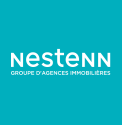

Notre société
Sous titre 1
Pour effectuer mon cursus en apprentissage, j’ai intégré le groupe Bertrandt au sein du plateau ADAS (Advanced driver assistance system). Depuis 40 ans, Bertrandt s’est massivement développé dans différents secteurs tel que l’automobile, l’aéronautique et les équipements agricoles. Il s’occupe principalement des systèmes embarqués mais conçoit également la structure des véhicules. L’entreprise est en concurrence directe avec les groupes Altran, Bosch, Continental, Valeo.Sous titre 2
Pour effectuer mon cursus en apprentissage, j’ai intégré le groupe Bertrandt au sein du plateau ADAS (Advanced driver assistance system). Depuis 40 ans, Bertrandt s’est massivement développé dans différents secteurs tel que l’automobile, l’aéronautique et les équipements agricoles. Il s’occupe principalement des systèmes embarqués mais conçoit également la structure des véhicules. L’entreprise est en concurrence directe avec les groupes Altran, Bosch, Continental, Valeo.Sous titre 3
Pour effectuer mon cursus en apprentissage, j’ai intégré le groupe Bertrandt au sein du plateau ADAS (Advanced driver assistance system). Depuis 40 ans, Bertrandt s’est massivement développé dans différents secteurs tel que l’automobile, l’aéronautique et les équipements agricoles. Il s’occupe principalement des systèmes embarqués mais conçoit également la structure des véhicules. L’entreprise est en concurrence directe avec les groupes Altran, Bosch, Continental, Valeo.Nos partenaires
La société CromDiag est
Orpi Aubagne
En savoir plus »

Nesten Trets
En savoir plus »Mes diagnostiqueurs
En savoir plus »Notre expertise
Natural Risk

Crom Diag est partenaire de Orpi Aubagne. Cette collaboration...
Fibre Count
conscientent les missions qui lui sont confiées.dxxxxsdsdfdsfdfdfdf
Nos certification & Assurance
Business To Customers